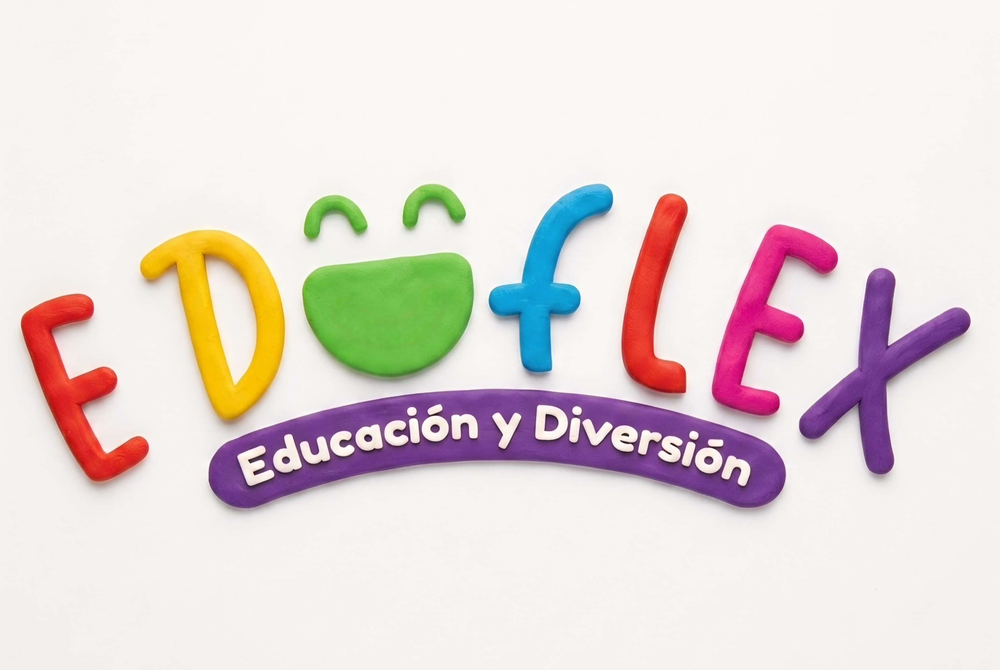

MADERA / MOBILIARIO TÉCNICO
EDUFLEX
Especialistas en la fabricación de mobiliario escolar y corporativo en madera. Implementamos un catálogo digital estructurado y optimizado para SEO Local, permitiendo que colegios e instituciones encuentren especificaciones técnicas de forma inmediata.
- Digitalización completa del catálogo de productos.
- Posicionamiento en búsquedas orgánicas para compras institucionales.
- Canal directo de cotización vía WhatsApp integrado.
